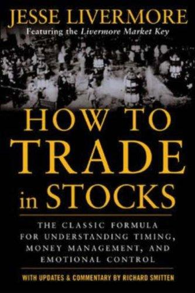

1940年，杰西·利弗莫尔（Jesse Livermore）在生命的最后一年写下了这本书，由纽约出版社Duell, Sloan & Pearce出版。此时距他因1907年恐慌和1929年大崩盘中的两次做空成名已过去十余年，距他在酒店衣帽间开枪自尽只剩数月。与《股票作手回忆录》不同，这不是别人以他为原型写的小说，而是利弗莫尔唯一一部亲笔写就、以第一人称直接传授方法的著作。书的初版共印制了包括500册特装本在内的多个版本，正文103页到133页附有十六幅红、蓝、黑三色套印的图表，用以说明他称之为"利弗莫尔市场关键"（Livermore Market Key）的记录系统。中文世界较通行的版本题为《股票大作手操盘术：融合时间和价格的利弗莫尔准则》，由丁圣元翻译、人民邮电出版社于2012年出版，与《股票大作手回忆录》并列为姊妹篇。
全书的核心是他所称的"枢纽点"（pivotal points）——股价在创出新高或新低后短暂盘整、随后确认方向的关键价位。利弗莫尔主张交易者不应在猜测中提前建仓，而要等待股价穿越枢纽点、市场自己"说话"之后再介入，因为此时风险最低而潜在回报最大。与之配套的是他的加仓法则：例如计划买入500股，不是一次性买满，而是先在100美元买入300股，价格证明自己正确、涨到105美元时再买100股，涨到110美元时再买最后100股——用市场的反馈而不是自己的信念决定仓位大小。他把这种做法追溯到年少时在"桶店"（bucket shop）交易的经历：那里的保证金通常只有10%，一旦亏损达到10%便被自动强制平仓，这段经历让他把"单笔亏损不超过本金10%"当作终生恪守的止损纪律，并反复提醒读者，一旦亏损扩大到必须硬扛、把自己从交易者变成被动"投资人"，就已经违背了这条最重要的规则。此外他强调只盯住少数几个自己真正了解、且属于当下市场领涨板块的股票，把资金集中在这些"市场领袖"股票上，而不是分散押注方向不明的大盘。
这本书出版后并未像《股票作手回忆录》那样立刻成为畅销书，反而在此后数十年间一度绝版、流通有限，直到2001年经理查德·斯密腾（Richard Smitten）重新整理、加入注释和现代图表对照后由McGraw-Hill再版，才重新进入大众视野。斯密腾是研究利弗莫尔生平的传记作者，他依据利弗莫尔家族提供的私人文件，为原书的交易法则补充了背景说明，并示范如何把"利弗莫尔市场关键"的记录方法套用到现代股市的走势图上。这一版本沿用至今，是目前市面上最常见的英文流通版本。
利弗莫尔本人一生三次宣告破产（1901年、1915年、1934年），又三次东山再起，最终却在1940年11月的感恩节持枪自尽，身后留给妻子的字条只有寥寥数语。这种巨大的反差，使得这本书读起来带有一种他本人未曾获得的警示意味：书中反复出现的"设好止损再入场""不要用意见对抗市场""利润要分批落袋"这些规则，恰恰是他本人在生命后期屡屡违背、最终为此付出代价的教训。对今天的交易者而言，这本书提供的不是一套可以照搬的公式，而是一个人用自己的整个交易生涯（以及最终的失败）验证过的风险管理框架——枢纽点决定何时进场，加仓法则决定如何扩大仓位，10%止损线决定何时认错离场，三者缺一不可。